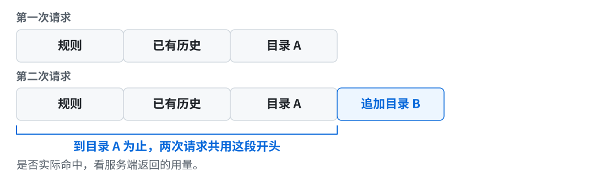

两次请求开头一样，模型服务能复用多少计算
一段很长的价格测试日志刚发给模型，下一次请求还要带上它。这时程序从目录 A 切到了工作树 B，多出一句“当前目录是 B”。把这句放在旧日志前，或者接在旧日志后，模型都能知道新目录。哪种放法能让服务复用更多已经算过的内容？
先找两次请求的第一个不同
两次输入从哪个位置开始不一样？
用同一路由和模型推一遍。先拿原目录的请求 A 当底稿。请求 B 只在日志后面补一句新目录。再看请求 C，消息和 B 一样，工具表上的 Read 和 Edit 换了位置。三次的 system 完全相同。
| 请求 | 实际工具顺序 | 按顺序发送的消息 |
|---|---|---|
| A · 原目录 | Read → Edit | 同一 system → 目录 A → 已配对的测试调用和长结果 |
| B · 切到工作树 | Read → Edit | 同一 system → 目录 A → 已配对的测试调用和长结果 → 新目录 B |
| C · 工具重排 | Edit → Read | 同一 system → 目录 A → 已配对的测试调用和长结果 → 新目录 B |
A 到 B，工具没变，A 的整段消息都在 B 的开头。模型服务如果还保存着前一次算出的中间状态，就有机会把这段直接用上。这就是前缀缓存。缓存里存的是注意力计算中间的键和值，所以也叫 KV 缓存。B 到 C，消息没变，可工具定义已经换了顺序。排查时只比较 system，就会漏掉这处变化。
能在本地找到分歧，能算出命中了多少吗？
把 B 的新目录挪到旧日志前面试试。到新目录那一格已经对不上了，后边两份字字相同的长日志也接不回同一段开头。「要复用的是从开头一直没变的那一段。」所以我会在请求里找第一个不同的位置，再去看服务回包实际命中了多少。
首读自检 · A 到 B 保留了哪段连续消息？B 到 C 的第一个工具还相同吗？
A 的全部消息仍是 B 的消息前缀。B 到 C 的消息相同，但工具数组从开头就变了。只比 system 找不到任何一个差异。这些是本地对照线索，哪个请求实际命中多少还要看服务回包。
新目录应放在请求的哪里？
哪些规则应保持稳定，哪些事实应追加在末尾？
A 到 B 怎么做到只多一项？若存在发请求前取当前目录，把新快照与历史里的最近一份标准快照比较。如果已经是 B，这一步直接结束。如果刚从 A 切到 B，程序把 B 接到消息尾部。目录事实的追加条件
src/ruocun/agent/context_runtime.py · 第 208–213 行
async def _ensureRuntimeContext(self) -> None:
if self.ctx.signal.is_set():
raise InterruptedError("上下文检查已取消。")
snapshot = buildRuntimeContext(self.ctx)
if needsRuntimeContext(self.session.messages, snapshot):
await self.journal.replace_context(self.session, [*self.session.messages, snapshot], reset_prompt=False)src/ruocun/agent/runtime_context.py · 第 43–47 行
def needsRuntimeContext(messages: Sequence[ChatMessage], snapshot: ChatMessage) -> bool:
for message in reversed(messages):
if isRuntimeContext(message):
return message != snapshot
return True这样留下了旧日志当时在 A 产生的记录，也让模型看得见下一次读相对路径应从 B 开始。真改了系统规则或权限时，新规则也必须进入本次请求。它在开头发生变化，允许比较的共同前缀就随之缩短。
以程序里的消息列表为准，还是以实际发出的请求为准？
主循环先组装待发送的模型、完整消息和工具清单。预检按这个输入继续处理目录快照和上下文窗口，最终外发材料还要经过对应的客户端构造器。
src/ruocun/agent/loop.py · 第 253–259 行
opts = cast(StreamChatOptions, dict(options))
opts["model"] = session.model
opts["messages"] = copy.deepcopy(session.messages)
opts["tools"] = api_tools() if api_tools is not None else registry.toApiTools()
if opts["tools"]:
opts["parallelToolCalls"] = True
opts["extra"] = {**options.get("extra", {}), "reasoning_effort": policy.reasoning_effort}用于比较的请求材料要以实际发送的请求体为准，下文把它简称为 wire。同一历史的 Chat 与 Responses 投影已经举了两种形状。这里新增的判断是找最后一处覆盖。Chat 构造请求时，extra 可以覆盖前面构造的字段，因此要比较应用覆盖后的值。
src/ruocun/client/client.py · 第 145–158 行
body: dict[str, Any] = {
"model": opts["model"],
"messages": wire_messages,
"stream": True,
"stream_options": {"include_usage": True},
field: max_tokens,
}
if tools is not None:
body["tools"] = tools
parallel = opts.get("parallelToolCalls")
if parallel is not None:
body["parallel_tool_calls"] = parallel
if extra:
body.update(extra)图里上下两行各是一趟请求。从左往右比，规则、历史和目录 A 都相同，新目录 B 才是本次追加的内容。图上的括号标出有机会复用的部分。

真要排查，先对齐实际生效的路由、模型和选项，再比客户端转换后的工具数组和连续消息。列表一变长，HTTP JSON 的闭合符号也会挪位置，数相同字符只能帮你定位哪里变了。服务端实际复用了多少，还得查这次回包。
写摘要时，哪段旧记录还能沿用？
把摘要指令加在原始连续前缀之后
长日志放在同一位置还有一次用处。窗口紧张时，程序要另发一份请求，请模型把已完成的检查和待核实的会员路径写进摘要。模型早先已经看过整段日志，这份请求还能沿用多少已算过的开头？假如写摘要前先把日志中段剪掉，摘要输入会从剪掉的位置起改变。若存把要摘要的旧段按原顺序送过去，在最后才补上“请写摘要”。回看摘要输入和压缩候选
| 请求 | 有效模型与工具 | 消息顺序 |
|---|---|---|
| 普通请求 | M，Read, Edit | system、Hook、测试调用和完整长日志、近期历史 |
| 同模型摘要 | M，Read, Edit | system、Hook、测试调用和完整长日志、末尾摘要指令 |
| 显式异模型摘要 | N，移除工具，采用摘要侧思考设定 | 原始连续旧前缀、末尾摘要指令 |
| 压缩后继续主任务 | M，恢复本次主轮工具 | system、Hook、新摘要、近期历史、有效待办 |
用原模型写摘要时，程序从这次有效请求复制工具、连接和已有思考选项，并移走主请求的强制工具选择和冲突的输出上限。选中旧段以前的连续输入因此有机会复用。摘要提交后，下一轮主请求带的是新历史。从表中日志被摘要替换的位置起，两次主请求已经不同，后面的请求可以沿这个新开头继续累积。
src/ruocun/agent/context_runtime.py · 第 305–327 行
raw_options = copy.deepcopy(dict(source))
for key in ("onFinishReason", "onEmptyTruncation"):
raw_options.pop(key, None)
extra = copy.deepcopy(source.get("extra", {}))
for key in ("tool_choice", "max_tokens", "max_completion_tokens", "max_output_tokens"):
extra.pop(key, None)
if model != source_model:
# 换模型生成摘要时，原模型的 KV 缓存无法复用。
raw_options.pop("tools", None)
raw_options.pop("parallelToolCalls", None)
extra = {"thinking": {"type": "disabled"}, "temperature": 0}
options = cast(StreamChatOptions, {**raw_options, "model": model,
"messages": [*copy.deepcopy(messages), {"role": "user", "content": COMPACT_INSTRUCTION}],
"extra": extra, "onUsage": on_usage})
if self._summary_limit is not None:
options["maxTokens"] = self._summary_limit
body = self.request_body(options)
output_limit = body.get("max_output_tokens", body.get("max_completion_tokens", body.get("max_tokens")))
window = self.context_window if model == self.session.model else contextWindowFor(
model, cast(Provider | None, options.get("provider")), options.get("baseUrl"))
if (type(output_limit) is not int or output_limit <= 0
or estimateRequestTokens(body) + output_limit >= window):
raise CompactionFailed("摘要原始前缀超过目标窗口，原上下文已保留；请调整摘要模型或预算。")假设原窗口 20,000，待摘要的原始请求估计 18,000，摘要输出上限 2,400。直接裁掉长日志中段或许放得进去，但会从那条工具消息开始改变送去摘要的连续前缀，也改变摘要实际能用的证据。RuoCun 对已经选中的摘要输入保留原文，代价是这个请求算出来要 20,400，超出窗口时保留原投影并停止。切点、候选和持久化细节见上下文压缩。
既然这次只写摘要，为什么同模型时还带 Read 的说明？拿同一段日志交给 DeepSeek Harness，它也沿用原请求的工具清单，在末尾追加摘要指令。若两边都保持原模型及工具，留下说明就能给已有计算一次复用机会。
如果只换摘要模型，若存按无法沿用原模型缓存处理，在这条路径省掉主轮的工具定义，并改用摘要自己的设置。DeepSeek Harness 0.2.2-rc.2 的默认摘要函数仍会附上会话请求头中已有的工具定义，即使配置了另一个摘要模型。这里比较的是实际构造的请求。能省下多少输入、服务有没有报命中，要看这次用量回包。DeepSeek Harness · 工具来源 · 摘要模型与请求选项
现有测试捕获了两种摘要请求。同模型时，它断言工具顺序不变，选中的那段旧消息按原文和原顺序保留，主轮的强制工具选择被移走。换成独立摘要模型时，它断言摘要请求里没有工具清单。同模型的请求断言 · 独立摘要模型的请求断言
摘要沿用工具定义，处理器只接收摘要文本
如果有效主请求带工具，保留它们能尽量维持请求模式。有人会同时设置 tool_choice=none，但这会改变选择模式。RuoCun 清除主轮的强制选择，不额外强制一个新模式，在摘要返回处把关。它独立调用摘要模型，没有走工具派发循环。
src/ruocun/agent/context_runtime.py · 第 348–365 行
self._recordUsage(received_usage if received_usage is not None else cast(Usage | None, response.usage), model, options)
if response.cancelled or self.ctx.signal.is_set():
raise InterruptedError("上下文压缩已取消，原上下文已保留。")
if (response.status != "complete" or response.error
or response.finish_reason in {"length", "max_tokens", "max_output_tokens"}):
raise CompactionFailed("上下文摘要未完成，原上下文已保留；本轮已停止。")
if (response.message.get("tool_calls") or response.finish_reason == "tool_calls"
or any(delta.get("kind") == "tool_call" for delta in response.deltas)):
raise CompactionFailed("上下文摘要返回工具调用，未执行工具；原上下文已保留，本轮停止。")
output = "".join(str(delta.get("text", "")) for delta in response.deltas if delta.get("kind") == "content").strip()
if not output:
content = response.message.get("content")
output = content if isinstance(content, str) else ""
match = re.search(r"<摘要>([\s\S]*?)</摘要>", output)
summary = (match[1] if match else re.sub(r"<分析>[\s\S]*?</分析>", "", output)).strip()
if not summary:
# 空摘要占位没有可替换旧上下文的有效内容，保留原上下文。
raise CompactionFailed("上下文摘要为空，原上下文已保留；本轮已停止。")假设摘要模型回了一条 Read 请求。即使同名工具在请求中公布，程序也会检查完成消息、结束原因及分片，发现调用就停止。会话保留原上下文，并记录收到的用量。完整、未截断、有正文且没有工具调用的摘要才继续参与候选缩小和提交。「摘要请求可以公布工具，返回的调用仍不得进入派发」。这让保护旧前缀与控制运行行为各有自己的落点。
服务回包究竟报了多少命中？
供应商用量回答命中多少，本地指纹帮助找到变化
假如同事指着本地日志问：“hit=0，这次是不是一个 token 都没命中？”先看看供应商实际给了什么。回包里的 prompt_cache_hit_tokens 优先，缺了才找详情里的 cached_tokens。拿到其中一个可用值，就能用总输入减去它，算出未命中量。两处都没给，程序整理用量时会把命中数留空。
src/ruocun/client/client.py · 第 162–174 行
def normalizeUsage(raw: dict[str, Any]) -> dict[str, Any]:
"""优先采用原生缓存字段，缺失时用 details.cached_tokens 补齐。"""
if "prompt_cache_hit_tokens" in raw:
return dict(raw)
details = raw.get("prompt_tokens_details")
cached = details.get("cached_tokens") if isinstance(details, dict) else None
if not isinstance(cached, int):
return dict(raw)
return {
**raw,
"prompt_cache_hit_tokens": cached,
"prompt_cache_miss_tokens": max(0, raw.get("prompt_tokens", 0) - cached),
}现在回到本地日志。即使回包只给了 prompt_tokens=12000，审计事件也会补出 hit=0 和 ratio=0。供应商若明确报告零命中，日志里的这两个值也一样。要写进测量结果，回查原始回包或整理后的用量，确认确有命中数量、总输入也为正。供应商没报命中数的这次，记作未知。
src/ruocun/session/cache_audit.py · 第 135–145 行
usage = inp["usage"]
prompt = usage.get("prompt_tokens", 0)
hit = usage.get("prompt_cache_hit_tokens", 0)
event: CacheAuditEvent = {
"agent": inp["agent"], "depth": inp["depth"], "turn": inp["turn"], "model": inp["model"],
"prompt": prompt, "hit": hit, "miss": usage.get("prompt_cache_miss_tokens", 0),
"completion": usage.get("completion_tokens", 0), "ratio": hit / prompt if prompt > 0 else 0,
"fp": {key: _cheapHash(value) for key, value in current.items()},
"changed": changed, "ts": int(time.time() * 1000),
}
event["fp"]["msgs"] = _cheapHash(inp.get("msgs", ""))要定位可能原因，主循环在预检后记录模型、system、工具指纹；启用审计后，有用量的轮次还可按执行身份记录各维度以及消息指纹。主循环这里使用预检后的选项和消息，摘要记录由其请求体构造器取得字段。它们是本地对照线索。检查供应商真正接到的结构时，还要核对实际外发、路由投影和覆盖项。
src/ruocun/session/cache_audit.py · 第 108–125 行
def record(self, inp: CacheAuditInput) -> None:
key = f"{inp['agent']}:{inp.get('subId', '')}:{inp['depth']}"
current = {"model": inp["model"], "sys": inp["sys"], "tools": inp["tools"], "tail": inp["tail"]}
previous = self.previous.get(key)
changed: list[str] = []
delta: dict[str, CacheAuditDelta] = {}
if previous is not None:
for dimension in ("model", "sys", "tools", "tail"):
if _cheapHash(current[dimension]) != _cheapHash(previous[dimension]):
changed.append(dimension)
if dimension != "model":
difference = divergence(previous[dimension], current[dimension])
delta[dimension] = {
"fromLen": len(_utf16(previous[dimension])) // 2,
"toLen": len(_utf16(current[dimension])) // 2,
"firstDiffAt": difference["firstDiffAt"], "sample": difference["sample"],
}
self.previous[key] = current先取主代理的两次请求比较。中间如果还有一趟子代理改用自己的 system，那一条不适合拿来当主代理的上一轮。记录器按角色、子任务编号和深度分开比对。拿 Read,Edit 和 Edit,Read 两个短字符串试比，第 0 位就不同。实际工具定义还有共同的外层结构，firstDiffAt 用 UTF-16 代码单元指出那份序列化内容从哪里分开。
目录 B 是追加在消息数组里的，消息指纹 msgs 会变，主轮记录里用来比较的 tail 却是空串。看到 changed 为空，还要打开实际消息：整串消息虽变了，A 的消息仍是 B 的前缀。指纹能指路，回包里的命中数字才用来算账。
从三组数据逐步缩小解释
| 请求 | 共同输入观察 | 输入 / 命中 | 当前能说什么 |
|---|---|---|---|
| 首次普通请求 | 作为比较基准 | 8,000 / 0 | 本轮报告没有命中 |
| 同模型，原前缀加摘要指令 | 工具同序，旧消息段连续相等 | 8,400 / 8,000 | 本轮报告命中约 95.2% |
| 同模型，工具顺序调整 | system 同值，工具定义顺序变化 | 8,400 / 1,000 | 本轮约 11.9%，本地工具变化提供排查线索 |
表里第三次已经找到工具顺序变化。如果另一次四维都稳、命中率仍低，先审消息和实际外发请求，再看空闲时长。报告在四维未变、低命中、输入达到一定体量且空闲超过阈值时提示“TTL 过期”。TTL 指一份缓存能留存的时间。这里是在用本地阈值猜测缓存可能已失效，服务端没回报实际失效时间。「对照请求找出哪里先变，再看服务报告有多少输入命中缓存」。固定请求布局能增加复用机会，命中还受服务端状态影响。
上面的 A、B、C 用来推演请求从哪里开始不同。看实际用量，翻另一份账本。2026 年 11 月 14 日，若存和 DeepSeek Harness 都用 DeepSeek 官方的 deepseek-flash（Flash1017）做了同样三道 Terminal-Bench 2.1 题，原题裁判都给了 3/3。把每套产品三题的命中量除以各自的总输入，若存是 98.50%，DeepSeek Harness 是 97.51%。
再看数量。若存的 10,194,600 个输入 token 有 153,000 个未命中，DeepSeek Harness 的 4,356,510 个有 108,318 个未命中。输出量分别是 112,222 和 63,075。按当时记录的峰价把命中输入、未命中输入和输出分别计入，若存高约 80.2%。命中比例更高的一边，仍可能花更多钱。
那六次运行均未观察到自动摘要。要看摘要请求实际命中了多少，翻 2026 年 11 月 13 日的另一组实录。旧摘要控制器与新路径使用硅基流动的 DeepSeek-V4.1-Flash，三组按预先登记的预热、等待条件各取首次摘要。新路径的三次命中/输入是 28,032 / 28,559、28,032 / 28,559、28,288 / 28,766，加权约 98.22%。固定旧控制器三次回报零命中。记录支持这次请求布局和服务条件下的输入命中收益。摘要内容和输出费用另外核对。
把刚才三份摘要回包放在同一张账上，它们一共用了 85,884 个输入 token。其中 84,352 个命中，另外 1,532 个未命中。现在能回答“项目实际用了多少”了吗？这笔账只覆盖这三次摘要的输入，其他请求和输出还没算。要算整个项目，先定统计时段，收齐主代理、子代理和摘要等请求各自的输入与输出，再合计。
想找能省的地方，也要落到一次请求。例如第三次摘要有 478 个输入 token 未命中。先对照它与前一次实际发出的开头，查工具顺序或消息从哪里变了；如果账上最大的一笔来自某轮很长的输出，就去看那轮是否反复抄了原日志。分别核对那次的请求和用量后，才知道该改哪里。
做一道只用算术的对照。假设第一轮输入 10,000 个 token，其中 9,000 个命中；第二轮输入缩到 8,000 个，却只有 4,000 个命中。命中和未命中单价不同时，第二轮需要按未命中价计算的部分从 1,000 增至 4,000。先把这两笔和实际输出都代回同一价目，再问总额是否变贵。仅凭请求缩短或两轮间隔很长，无法区分缓存淘汰、路由变化和输入本身改动。
本地对照也要挑对上一轮。主代理发一次请求，中间一个子代理换了 system，又轮到主代理继续沿用原 system。测试让三个请求依次经过记录器，最后一次的变化清单仍为空。拿子代理那次请求去解释主代理的命中，会得到错误的起点。 查看父子请求分别比较的用例
拿到一份用量回包后怎么查
比较请求前缀与服务回报
cwd 变化只追加尾部消息，应该预期 system 指纹、消息指纹怎样变化？
展开详答
旧 system 保持时它的指纹不变。目录消息改变整体消息文本，通常会改消息指纹。逐条比较可见先前消息完整保留为前缀。若另有 system 刷新或路由变化，应单独核对。
同模型摘要为什么读取旧长日志而不直接使用这次产生的裁剪文本？
展开详答
这次裁剪只针对压缩候选与最终投影。摘要输入要保持旧消息在切点前连续原样，上游服务才有机会复用旧前缀。原始前缀放不下时会停止。
摘要完整返回，正文非空，但流中曾出现工具调用分片。能提交吗？
展开详答
不能。调用分片也会触发拒绝，即使最终文本不空。摘要只接受无工具调用的完备结果，不接通执行器，主会话保持原投影。
同一模型两次请求的 system、工具指纹相同。甲的服务回包给出输入 10,000、命中 8,000；乙只报告输入 12,000，没有任何缓存用量字段。同事把乙记成“命中率 0%”。你能确认哪次的比率？下一步查哪份原始数据？
展开详答
甲可算出 80%。乙的本地事件可能显示 0%，因为审计用 0 填了缺失的命中数。先查看乙的原始用量或归一化结果，检查原生命中量和兼容的 cached_tokens。仍缺就标未知。要继续调查为什么变化，再核对路由、有效模型选项、实际输入顺序和首个差异位置。
这一章带走什么
- 两次请求从第一个不同的位置分开，后面字字相同的日志也接不回共同开头。新目录可以接在历史末尾，规则真的改了，就把新规则放进这次请求。
- 用同一个模型写摘要时，把那段原文交给摘要请求，服务有机会复用之前算过的开头。摘要提交后，下一次主请求从替换旧历史的地方起就变了。
- 想找变化，拿实际发出的两份请求来比。想知道命中了多少，看服务回包。服务漏报时，本地日志里的
hit=0也可能是程序补的。
下次查会员预览，agent 翻出一条旧测试建议。照着跑绿了，就能说今天的预览也对了吗？
面经自测
怎样提高 Prompt Cache 的命中率？
字节跳动 · 一面 · 面经原帖 · 题意转述
展开参考回答
模型服务可以复用从请求开头起连续相同的内容。我会把稳定的规则、工具和历史顺序保持好，把后来才知道的事实接在后面。实际命中多少看服务端回报。
若存切目录时追加一条新快照。旧的 system 和此前对话仍有机会沿用，改写开头则会更早出现差异。
项目实际用了多少 token？你怎样找出还有哪些地方可以省？
蚂蚁集团 · 一面 · 面经原帖 · 题意转述 可回看 第 2 章 第 13 章
展开参考回答
这三次摘要能核实的输入合计是 85,884 个 token，其中 84,352 个命中，1,532 个未命中。项目的完整时段、其他请求和输出还没统计，我不能把这笔小账报成全项目总量。
统计时我会按请求收齐输入、命中、未命中和输出，把最费的一轮单列出来。比如第三次摘要有 478 个输入未命中，就检查那次发出的消息和工具顺序；若要估费用，还得分别按各项单价算。
请求变短了，费用反而更高，你怎样验证原因？
腾讯 · 一面 · 面经原帖 · 题意转述
展开参考回答
先对齐同一模型、同一任务的命中与未命中输入，再算输出费用。短请求如果大部分要重新计算，也可能更贵，最后以用量记录为准。
做完上下文压缩，怎样尽量让请求继续命中原来的缓存？
拼多多 · 一面 · 面经原帖 · 题意转述
展开参考回答
分开看生成摘要的请求和之后的主请求。前者尽量用原顺序的旧消息再追加摘要要求。后者已经换了摘要，只能从开头比较还剩多少相同内容。
摘要请求里带了工具说明，摘要模型提出 Read 会真的去读吗？
若存设计题
展开参考回答
本地说工具清单没变，就能报出这一轮命中了多少 token 吗？
若存设计题
展开参考回答
前后两轮看起来一样，隔了很久命中突然下降，若存能断定缓存过期了吗？
若存设计题